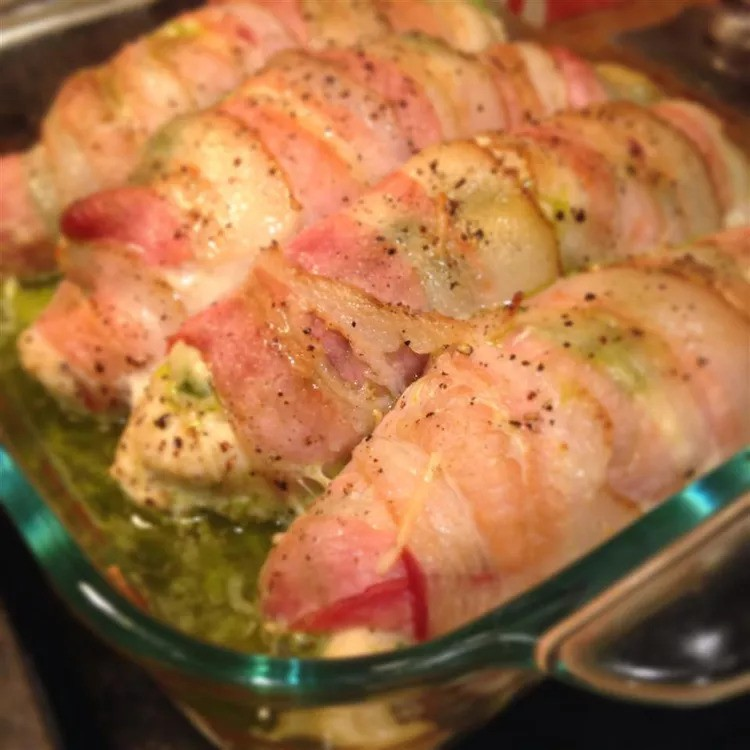

Bacon Wrapped Pesto Chicken
Recipe for creating Chicken with Pesto & Bacon
Chicken with pesto wrapped in bacon. Something to make for dinner that most will like, even those who are picky eaters.
This could be for the family or guests or maybe you and a partner that come over and who doesn't like chicken and bacon with some added seasoning on top?
Easy to make, yet tastes like you've spent hours in the kitchen. Simply delicious!
Ingredients
- 6 skinless, boneless chicken breast halves - pounded flat
- salt and ground black pepper to taste
- 6 tablespoons prepared basil pesto
- 6 slices bacon
- ½ cup vegetable oil
Steps
- Preheat oven to 400 degrees F (200 degrees C).
- Lay a chicken breast out flat, and sprinkle with salt and black pepper. Spread pesto sauce over the chicken breast, and roll the chicken breast in a slice of bacon, securing the roll with toothpicks. Lay the rolled chicken breast into a 9x9-inch baking dish. Repeat with remaining chicken breasts. Pour the vegetable oil over the chicken breasts.
- Bake in the preheated oven until the chicken is no longer pink inside and the bacon is crisp, about 30 minutes. An instant-read thermometer inserted into the center of a roll should read at least 160 degrees F (70 degrees C).